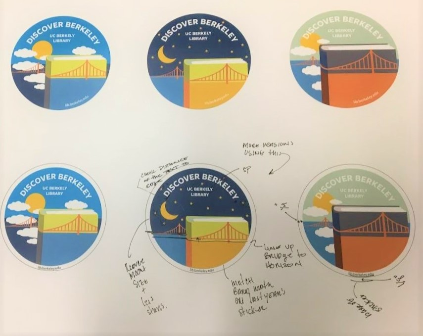
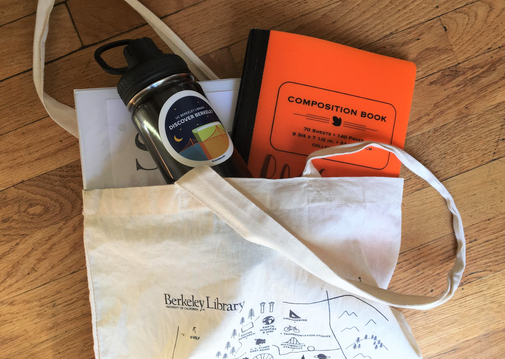
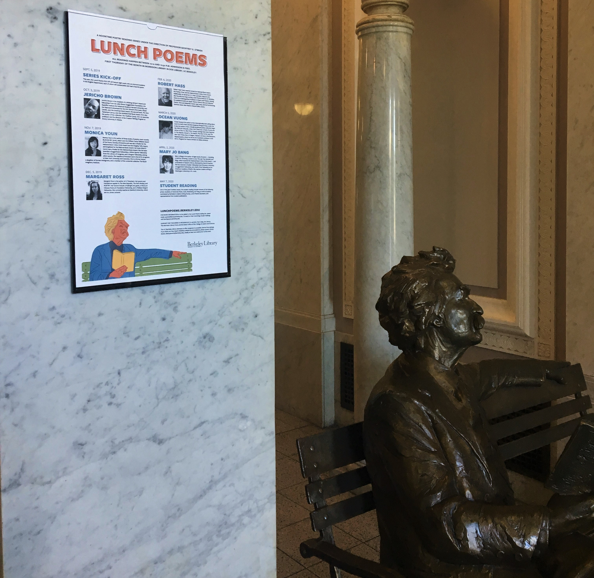

Introduction
As a Graphic Design and Exhibits Intern at the UC Berkeley Library Communications Office I create assets with the Adobe Suite nearly daily to create quality graphics that reach a wide audience of students and faculty members. I also assist in managing, setting up, and maintaining exhibits in and around the UC Berkeley Libraries. I've produce a diverse body of graphics that optimizes UC Berkeley’s styling guide. Check them out!
NaNoWriMo
In 2018, I worked on the promotional materials for UC Berkeley's National Novel Writing events. We chose the blue background because it was the colors of the NaNoWriMo sheild. This graphic was used in both print and online advirtising.
Cal Day 2019
To celebrate the school, UC Berkeley holds its annual Cal Day event where prospective and community members are invited to the campus for activities and events. In the spring of 2019, I designed this promotional sticker for the library.



Lunch Poems
In the spring, UC Berkeley Library hosts a series of poets to speak about their work in the afternoon. The event happens in the historic Morrison Library. As visitors enter the library, Mark Twain sitting on a bench welcomes readers and guests. This motif inspired the work I did for this year's promotional poster.

Digital Humanities Projects
I've developed a series of graphics for the digital humanities department at UC Berkeley. My pieces strive to represent the diverse and interdisplinary nature of the department.